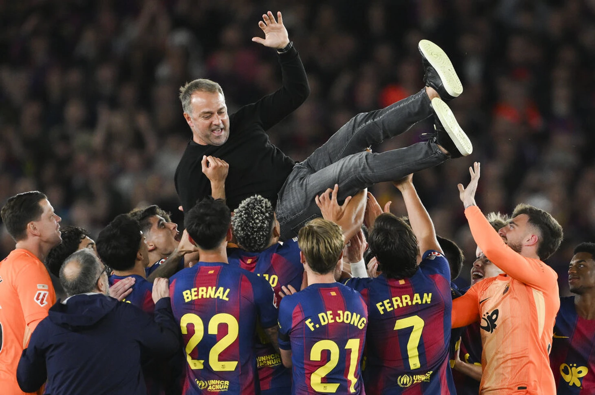

Он остается!

Барса не желает терять тренера
Первые эмоции Ханси: «Я понял, что сейчас в правильном месте. С нашей стороны это обязательство – стремиться к максимальному уровню игры и завоевывать новые трофеи. Все в «Барселоне» мечтают о Лиге чемпионов. Мы пытались ее выиграть, мы продолжим пытаться. Благодарен всем за доверие и возможность продолжать»
Контракт уже подписан
О новом контракте «Барселона» сообщила официально. «В понедельник немецкий тренер подписал соглашение в офисе клуба в присутствии спортивного директора Рафаэля Юсте, директора футбольного отдела Деку и других членов спортивной комиссии. Также присутствовал избранный президент Жоан Лапорта», — объявили каталонцы
← Вернуться на главную